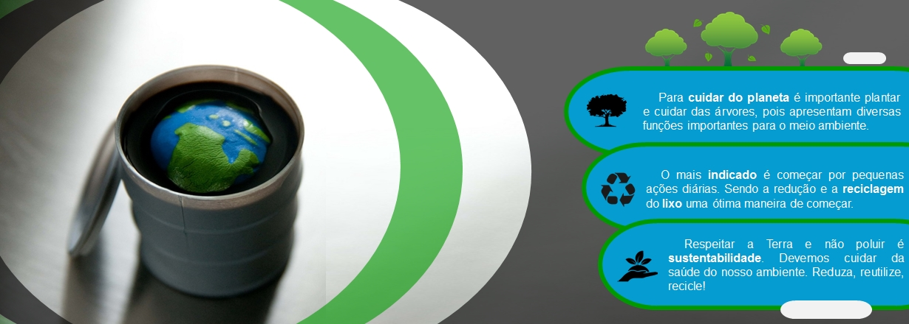
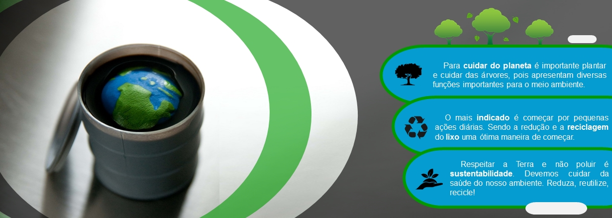

O nosso objetivo no projeto Life Earth
Nosso projeto é uma junção de ferramentas que facilitam o seu trabalho. Ao invés de fazer a pesquisa sustentável, nós fazemos isso por você! Nosso trabalho é tornar muito mais simples o processo de desenvolvimento sustentável nos lugares, seja na sua empresa, na sua casa ou qualquer lugar que ache necessário. Com pequenas mudanças queremos de pouco a pouco mudar o mundo.

Produtos sustentáveis:
O produto sustentável é aquele que apresenta o melhor desempenho ambiental ao longo de seu ciclo de vida, com função, qualidade e nível de satisfação igual, ou melhor, se comparado com um produto-padrão.

Recursos sustentáveis
Contaremos com artesões para realizar nosso serviço, manufaturando objetos utilizando recursos
sustentáveis como matéria-prima, gerando empregos e consciência sobre o meio sustentável.

Vantagens do uso de produtos sustentáveis:
A sustentabilidade não é discutida apenas porque está na moda ou porque é novidade: é uma necessidade. Sendo assim, contribuí para a vida do nosso planeta, reduz custos e ajuda na reputação de sua empresa.


 
